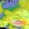
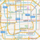

<!DOCTYPE html>
<html lang="en">
<head>
    <meta charset="UTF-8">
    <title>map demo</title>

    <link rel="stylesheet" href="../dist/css/gm_map.css">
    <link rel="stylesheet" href="../dist/css/mauna-map-tool.css">
    <link href="https://cdn.bootcss.com/bootstrap/4.0.0/css/bootstrap.css" rel="stylesheet">
    <link href="https://cdn.bootcss.com/font-awesome/4.7.0/css/font-awesome.css" rel="stylesheet">
    <link href="../dist/css/iCheck/custom.css" rel="stylesheet">
    <style>
        body{
            height: 600px;
            width: 100%;
        }
        #map {
            height: 100%;
            width:100%;
        }
    </style>
    <script src="https://cdn.bootcss.com/jquery/3.3.1/jquery.js"></script>
    <script src="https://cdn.bootcss.com/iCheck/1.0.2/icheck.min.js"></script>
    <script src="https://d3js.org/d3.v4.min.js" charset="utf-8"></script>
    <script src="https://d3js.org/d3-hexbin.v0.2.min.js"></script>
    <link href="https://cdn.bootcss.com/mapbox-gl/0.43.0/mapbox-gl.css" rel="stylesheet">
    <script src="https://cdn.bootcss.com/mapbox-gl/0.43.0/mapbox-gl.js"></script>
    <script src="../dist/js/data.js"></script>
</head>
<body>
<div id="map"></div>

</body>
<script src="../dist/js/commons.js"></script>
<script src="../dist/js/gm_map.js"></script>
<script>
    var map_options = {
        map_container: 'map',
        tools: true,
        navigation:[
            {
                name:'城市导航',
                value:'city',  //唯一，如果value为city那么必须是城市导航
                frequently_used_city: [{

                    name: '全国',

                    zoom: 4,

                    center: [34.950204, 110.595009]

                }, {

                    name: '北京',

                    zoom: 12,

                    center: [39.904989, 116.405285],

                }, {

                    name: '上海',

                    zoom: 12,

                    center: [31.231706, 121.472644],

                }, {

                    name: '广州',

                    zoom: 12,

                    center: [23.125178, 113.280637],

                }, {

                    name: '深圳',

                    zoom: 12,

                    center: [22.5432839, 114.057979],

                }, {

                    name: '天津',

                    zoom: 12,

                    center: [39.125596, 117.190182],

                }, {

                    name: '成都',

                    zoom: 12,

                    center: [30.5727469, 104.066743],

                }, {

                    name: '南京',

                    zoom: 12,

                    center: [32.05957, 118.796682],

                }, {

                    name: '杭州',

                    zoom: 12,

                    center: [30.287459, 120.153576],

                }, {

                    name: '武汉',

                    zoom: 12,

                    center: [30.584355, 114.298572],

                }, {

                    name: '湖州',

                    zoom: 12,

                    center: [30.867198, 120.102398],

                }, ]
            },
            {
                name:'兴趣点导航',
                value:'marker'
            },
            {
                name:'其他导航',
                value:'other'
            }
        ]

    };
    var map = new mauna_map.init(map_options,function () {

    });
    var tool_view_point_template = '<li data-placement="auto bottom" data-toggle="tooltip" title="" data-original-title="我的视野" data-picture="0" class="view_point"><i class="map-icon map-view"></i>\
                                        <div class="views_window">\
                                            <div style="background-color: #EDEDED;padding: 0;margin-left: 1px;">\
                                                <div class="views_row">\
                                                    <input type="text" class="form-control view_point_name">\
                                                    <i class="views_add map_plus" ></i>\
                                                </div>\
                                            </div>\
                                            <div class="views_div">\
                                            <div class="views_item_container" data-name="北京"><div class="views_item" data-viewid="xOtHVlhYxH" data-zoom="10" data-center="116.404269,39.915378" title="北京">北京</div><div class="delete_view" style="display: none;"><i class="delete_view_point map_close"></i></div><div class="set_default" data-viewid="xOtHVlhYxH" data-default="0" style="display: none;"><span>设为默认</span></div></div>\
                                            <div class="views_item_container" data-name="上海"><div class="views_item" data-viewid="xOtHVlhYxH" data-zoom="10" data-center="121.476213,31.234823" title="上海">上海</div><div class="delete_view" style="display: none;"><i class="delete_view_point map_close"></i></div><div class="set_default" data-viewid="xOtHVlhYxH" data-default="0" style="display: none;"><span>设为默认</span></div></div>\
                                            <div class="views_item_container" data-name="广州"><div class="views_item" data-viewid="xOtHVlhYxH" data-zoom="10" data-center="113.270793,23.136903" title="广州">广州</div><div class="delete_view" style="display: none;"><i class="delete_view_point map_close"></i></div><div class="set_default" data-viewid="xOtHVlhYxH" data-default="0" style="display: none;"><span>设为默认</span></div></div>\
                                            <div class="views_item_container" data-name="深圳"><div class="views_item" data-viewid="xOtHVlhYxH" data-zoom="10" data-center="114.062663,22.555457" title="深圳">深圳</div><div class="delete_view" style="display: none;"><i class="delete_view_point map_close"></i></div><div class="set_default" data-viewid="xOtHVlhYxH" data-default="0" style="display: none;"><span>设为默认</span></div></div>\
                                            <div class="views_item_container" data-name="南京"><div class="views_item" data-viewid="xOtHVlhYxH" data-zoom="10" data-center="118.801741,32.064245" title="南京">南京</div><div class="delete_view" style="display: none;"><i class="delete_view_point map_close"></i></div><div class="set_default" data-viewid="xOtHVlhYxH" data-default="0" style="display: none;"><span>设为默认</span></div></div>\
                                            </div>\
                                        </div>\
                                    </li>';

    mauna_map.addToolbar(map,'view_point',tool_view_point_template,function () {

    },function () {

    },function () {
        $('.views_item').on('click',function (e) {
            var latlng = [parseInt($(this).attr('data-center').split(',')[1]),parseInt($(this).attr('data-center').split(',')[0])];
            var zoom = parseInt($(this).attr('data-zoom'));
            console.log(latlng,zoom);
            map.setView(latlng,zoom);
            e.stopPropagation();
        })
    });

    var line = mauna_map.initLine(map);

    var tool_view_control_template = '<li data-placement="auto bottom" data-toggle="tooltip" title="" data-original-title="测距" data-picture="0" class="ranging" >\
                                        <i class="map-icon map-rule"></i>\
                                    </li>';
    mauna_map.addToolbar(map,'ranging',tool_view_control_template,
        function () {
            mauna_map.startLine(map,'ranging');
        },function () {
            //mauna_map.endLine(line);
        },function () {

        });


    var tool_control_component_template = '<li data-picture="0" class="view_control" >\
                                                <i class="map-icon map-eye" data-placement="auto bottom" data-toggle="tooltip" title="" data-original-title="显示控制" ></i>\
                                                <div class="tools_window">\
                                                    <label class="tools-item i-checks">\
                                                        地址搜索\
                                                        <input type="checkbox" tool-name="searchplace" checked>\
                                                    </label>\
                                                    <label class="tools-item i-checks">\
                                                        中心地址\
                                                        <input type="checkbox" tool-name="centerpoint" checked>\
                                                    </label>\
                                                    <label class="tools-item i-checks">\
                                                        比例尺\
                                                        <input type="checkbox" tool-name="scale" checked>\
                                                    </label>\
                                                    <label class="tools-item i-checks">\
                                                        级别工具\
                                                        <input type="checkbox" tool-name="zoomslider" checked>\
                                                    </label>\
                                                    <label class="tools-item i-checks">\
                                                        鹰眼地图\
                                                        <input type="checkbox" tool-name="minimap">\
                                                    </label>\
                                                </div>\
                                            </li>';

    mauna_map.addToolbar(map,'view_control',tool_control_component_template,
        function () {

        },function () {

        },function () {
            var tools_window = $(document).find('.tools_window');
            tools_window.find('.i-checks').iCheck({
                checkboxClass: 'icheckbox_map_big',
                radioClass: 'iradio_map'
            });
            tools_window.find('input[type=checkbox]').on('ifChecked', function() {
                var tool = $(this).attr('tool-name');
                mauna_map.showComponent(map, tool);

            }).on('ifUnchecked', function() {
                var tool = $(this).attr('tool-name');
                mauna_map.hideComponent(map, tool);
            });
        });

    var tool_change_map_template = '<li data-picture="0" class="map_source">\
                                                <i class="map-icon map-map" data-placement="auto bottom" data-toggle="tooltip" title="" data-original-title="地图来源"></i>\
                                                <div class="map_source_window">\
                                                    <div class="map_source_container">\
                                                        <div class="map_source_item" data-source="gaode">\
                                                            <span>高德地图</span><i></i>\
                                                        </div>\
                                                        <div class="map_source_item" data-source="google">\
                                                            <span>谷歌地图</span><i></i>\
                                                        </div>\
                                                        <div class="map_source_item" data-source="tianditu">\
                                                            <span>天地图</span><i></i>\
                                                        </div>\
                                                        <div class="map_source_item" data-source="geoq">\
                                                            <span>智图（亮色）</span><i></i>\
                                                        </div>\
                                                        <div class="map_source_item" data-source="geoq-bb">\
                                                            <span>智图（暗色）</span><i></i>\
                                                        </div>\
                                                    </div>\
                                                    <div class="map_source_options">\
                                                        <div class="map_source_option" data-option="satel">\
                                                            <div class="map_source_img"></div>\
                                                        \
                                                        <span>卫星</span>\
                                                    </div>\
                                                    <div class="map_source_option map_source_img_active" data-option="map">\
                                                        <div class="map_source_img"></div>\
                                                        \
                                                        <span>地图</span>\
                                                    </div>\
                                                </div>\
                                                <div class="map_source_road" data-road="close">\
                                                    <span>路况</span>\
                                                    \
                                                </div>\
                                            </div>\
                                            </li>';

    mauna_map.addToolbar(map,'map_source',tool_change_map_template,
        function () {

        },function () {

        },function () {
            var _open = 'open',
                _close = 'close';
            var _open_img = '../dist/images/map_source_road_open.png';
            var _close_img = '../dist/images/map_source_road_close.png';
            var _road = 'close';
            var _map = 'gaode';
            var _option = 'map';

            $('.map_source_item[data-source=' + map.map_source + ']').addClass('map_source_item_active');
            $('.map_source_item[data-source=' + map.map_source + ']').attr('shown', "show");

            var map_source_window = $('.map_source_window');
            map_source_window.on('click', '.map_source_item', function(e) {
                map_source_window.find('.map_source_item').removeClass('map_source_item_active');
                var _this = $(this);
                _this.addClass('map_source_item_active');
                _map = _this.attr('data-source');
                changeMap();
                e.stopPropagation();
            });

            map_source_window.on('click', '.map_source_img', function(e) {
                map_source_window.find('.map_source_option').removeClass('map_source_img_active');
                var _this = $(this).parent();
                _this.addClass('map_source_img_active');
                _option = _this.attr('data-option');
                changeMap();
                e.stopPropagation();
            });

            map_source_window.on('click', '.map_source_road', function(e) {
                var _this = $(this);
                var open_close = _this.attr('data-road');
                if (open_close == _close) {
                    _road = _open;
                    _this.attr('data-road', _open);
                    _this.find('img').attr('src', _open_img);
                    _this.find('img').removeClass(_close);
                    _this.find('img').addClass(_open);
                } else {
                    _road = _close;
                    _this.attr('data-road', _close);
                    _this.find('img').attr('src', _close_img);
                    _this.find('img').removeClass(_open);
                    _this.find('img').addClass(_close);
                }
                changeMap();
                e.stopPropagation();
            });

            function changeMap() {
                var _map_option, center, open_close;
                _option == 'satel' ? _map_option = _map + '-satellite' : _map_option = _map;
                _road == 'open' ? open_close = true : open_close = false;
                center = map.getCenter();
                mauna_map.changeMap(map, _map_option, open_close);
                map.setView(center);
            }
        });

    var latFn = d3.randomNormal(30, 1);
    var longFn = d3.randomNormal(104, 1);
    var count = 100;
    var data = [];
    for(var i = 0; i < count; i++) {
        data.push([ longFn(), latFn() ]);
    }
    mauna_map.drawHexbin(map,data);

</script>
</html>